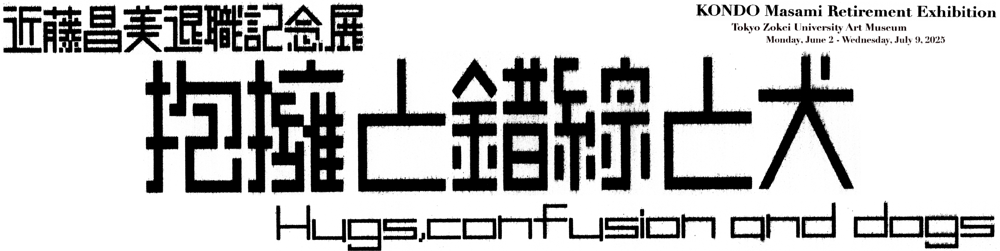

抱擁とは美術館内に常設されたジャコモ・マンズー作品《恋人たち》の姿形をお借りした。 元々は高尾校舎1号館のエントランスフロアにあったこの像に私が出会ったのは、18歳の受験の時とその後一浪して合格した時だったが、深く関わるようになったのは1991年31歳の時に非常勤講師で勤務するようになってからだ。 その2年後に高尾校舎から現校舎の美術館内に移設されたわけだが、44歳で専任になり65歳で定年を迎える私としては人生の半分以上をこの大学と関わって来たわけだ。 しかしここを去る今の感慨は抱擁ばかりではなく交錯感も強く感じているのも事実だ。大学人として十二分に大学と対峙して来たのか、画家として存分に活動出来たのか甚だ疑問がある。良いこともあったが嫌なこともたくさんあった。 マンズーの恋人たちのように情熱を持って抱擁し合うことなどとても出来ない存在が勤務校である本学だったのかもと今さらながら感じる。 「抱擁と錯綜と犬/ Hugs, confusion and dogs」とは、私の捻れた本学との距離感そのものであり、「犬」とは実は私のことだ。 しかし今さらながらにこの30数年、専任になり20年余を振り返ると確実に自分の人生の大きな部分を占めていることはたしかで、本学で出会ったすべての皆さんには錯綜しながらも感謝したいと思う。

近藤昌美 KONDO Masami
1960年 埼玉県白岡市生まれ
1982年 ニューヨークに滞在
1985年 東京藝術大学美術学部絵画科油画専攻卒業
1987年 東京藝術大学大学院修士課程修了
1988年 東京藝術大学大学院研究生修了
■ 主な個展
1984・1985年 かねこ・あーとG1／東京
1986・1987・1991・1994年 ルナミ画廊／東京
1988年 なびす画廊／東京
1989・1994年 秋山画廊／東京
1990・1991年 ギャラリー古川／東京
1993年 ギャラリーgen／埼玉
1995年 ギャラリーぐばく／埼玉
2000・2001年 ギャラリー・イン・ザ・ブルー／栃木
2002年 藍画廊／東京
2003年 ギャルリーヴェルジェ／神奈川
2006年 アートスペース虹／京都
2013年 HIGURE17-15 cas／東京
2015年 KOMAGOME1-14 cas／東京
2018年 トキ・アートスペース／東京
2021年 宇フォーラム美術館／東京
2023年 東京アートミュージアム／東京
■ 主なグループ展
2010年
「BERLIN&TOKYO COMMUNICATION ART」ベルリン東京２０作家Freies Museum Berlin／ドイツ（ベルリン）
2014年
「ART MEETING 2014田人の森に遊ぶ」野外展／福島（いわき市）
2016年
「ART MEETING 2016田人の森に遊ぶ」野外展／福島（いわき市）
「まなざしの系譜」展 ４つの美大教員と教え子の展覧会 ギャラリー睦／千葉
2017年
「日中国際交流美術展招待作家展2017」千葉県立美術館／千葉
2018年
「ART MEETING2018田人の森に遊ぶ」野外展／福島（いわき市）
「日中国際交流美術展招待作家展2018」千葉県立美術館／千葉
2019年
「アートビューイング西多摩2019 Artの地産地消」青梅市立美術館／東京
2020年
「日中国際交流美術展招待作家展2020」千葉県立美術館／千葉
2021年
「表層の冒険ー抽象のバロキスム」企画:谷川渥 ギャラリー鴻／東京
「視色手考画説『水彩考』」企画：菊池敏直 東京アートミュージアム／東京
2020〜2024年
「RING ART ナガサキの地でアートを考える」企画：井川惺亮（長崎大学名誉教授）長崎県美術館県民ギャラリー/長崎

東京造形大学附属美術館
〒192-0992 東京都八王子市宇津貫町1556〈東京造形大学構内〉
TEL：042-637-8111
交通アクセス：JR横浜線相原駅よりスクールバス5分・徒歩15分
※当館には専用駐車場がありませんので、公共交通機関をご利用ください。